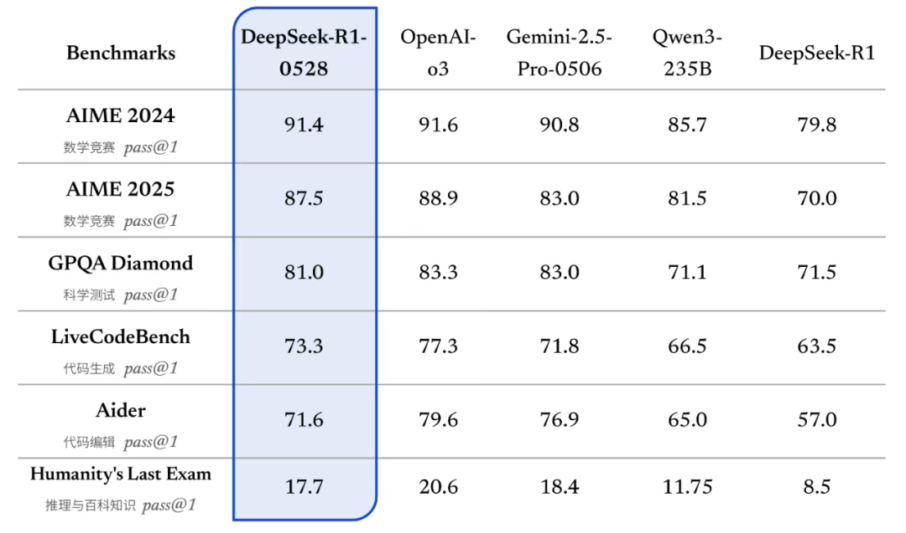

DeepSeek 对国产芯片的价值
DeepSeek 又更新了，0528的版本在代码生成和幻觉消除方面有了比较大的提升：
更新后的 R1 模型在数学、编程与通用逻辑等多个基准测评中取得了当前国内所有模型中首屈一指的优异成绩，并且在整体表现上已接近其他国际顶尖模型，如 o3 与 Gemini-2.5-Pro。

DeepSeek 带来了什么
模型架构上的确定性，带来了软硬件一体化设计的确定性
在早年间，传统CV/NLP 模型，芯片厂商本着好料用在刀刃上原则，最大化晶体管的利用率，为了支持所谓的主流模型，大多数芯片厂商在初期照着bert 和 resnet 规划conv2d,conv1d 的卷积算力，以及匹配的带宽，数据流的设计也是偏重于卷积，算力分配上基本也都是以dense 算力为主。再到后来，llama 系列的开源，Transformer 结构模型慢慢收敛，算力分配上又慢慢向mutmul 等算子进行建模。
除了底层算力配比的层面，在软件架构的层面，以往cv 类模型和想在llm 模型相比, 在上层架构上没有太多玩法，基本还是参考TensorRT 的做法，通过图编译的模式，在图层做大面积的fusion，甚至做整图fusion，一招鲜，吃遍天，这类模型通过这种方式基本能打满理论芯片的性能。
切到Transformer 类模型后，其对算力和带宽在prefill 和decode阶段的不同偏重，又引申出P-D 分离等上层框架的适配工作，比如vLLM/SG-lang等，这些在芯片公司需要有一个独立框架团队类做支撑。
DeepSeek 从DeepSeek V3 开始，包括后来的R1初版以及最新的0528 版本，都还是复用一套base架构，这种模型架构上的确 定性给国产芯片的软硬件一体化指明了优化方向。最近DeepSeek 发表的论文“Insights into DeepSeek-V3: Scaling Challenges and Reflections on Hardware for AI Architectures”[https://arxiv.org/pdf/2505.09343] 从模型结构探索的角度，给未来芯片设计包括系统设计提供了方向，其中重要的是以下几点：
发展更精确的低精度计算单元，以支持高效的模型训练和推理。
实现规模扩展（scale-up）与规模扩张（scale-out）的融合，提升系统的灵活性和可扩展性。
创新低延迟通信结构，满足大规模模型对高速数据传输的需求。
关于这几点，论文中DeepSeek 都有自己从模型结构上设计的思考，同时也有具体实践，包括DeepEP 和MLA 算子的详细实现。
模型的确定性，带来了市场落地的确定性
同样是开源模型，为什么llama 没有做到DeepSeek 这么大的影响，llama 系列也是开源模型，同时架构也基本完全开放，我想主要有以下几点：
-
DeepSeek 不光是开源模型，在开源模型的基础上，释放了大量一线实践的成果，包括上面提到的算子层面，以及系统架构层面，这让广大的上游芯片厂商放心也安心，因为这些都是实实在在可以落地的分析，对比LLaMa，除了模型权重，基本无相关落地的实践guideline，在LLaMa-3 发布后，还有大量翻车的测试结果，也暴露出其对自身模型信心不足；
-
LLaMA（1、2、3）使用的是 Meta 研究许可证（Meta Research License），其商用默认不支持，需要特殊许可，而DeepSeek 商用无限制，是真正的开源模型，这也让下游的众多客户可以放开拳脚；
| 对比项目 | LLaMA（Meta） | DeepSeek（DeepSeek-AI） |
|---|---|---|
| 开源协议类型 | Meta Research License | Apache License 2.0 |
| 是否允许商用 | ❌ 否 | ✅ 是 |
| 是否允许修改 | ✅ 是（限于研究目的） | ✅ 是（无限制） |
| 是否允许再分发 | ❌ 否 | ✅ 是 |
| 适用对象 | 限定组织（学术、政府、授权企业） | 所有个人和组织 |
| 适用场景 | 科研、技术验证 | 商业部署、产品集成、科研 |
| 许可门槛 | 高（需申请并获批） | 低（直接下载和使用） |
| 典型限制条款 | 不得商用，不得再分发，需注明用途 | 遵守 Apache 2.0 条款，无额外限制 |
| 是否真正开源 | 🚫 半开源（开放获取） | ✅ 真正开源 |
- 从DeepSeek R1-0528 的release来看，只是在后训练上做了调整，但是模型结构和V3 完全保持不变，对于芯片厂商来说，是最大的利好，不需要额外的适配，更新模型checkpoint，实现用户体验的无痛升级，这种大方向的稳定幸福感，带来了稳定的市场落地的确定性；
DeepSeek 们
DeepSeek 代表的是国产技术流的自信心的提升，从之前公开的梁文峰暗涌访谈对话来看，有几点印象深刻：
-
资金方面：本身就是做量化，外加每年固定的慈善捐款（做开源本质上也是慈善）可以转化，另外，除夕夜前夕发布多模态大模型，美股芯片相关股大跌（硬伟大全家桶系列），据传有提前做空，如果属实，这一顿操作下来，资金反哺Deepseek 自身的AI 基建，“没有枪，没有炮，敌人给我们造”；
-
人才和组织方面：AGI/ASI 是世界性难题，自然而然的可以吸引到顶尖人才，目前人才梯队主要是Top3 的应届毕业生和博士实习生，从算法创新的角度，这些人才储备足以形成算法创新的储备，另外在资金充裕的情况下，不急于做技术货币化，文化组织自发形成一个扁平的松散架构（原始创新必备，从google初期pageRank 的创新，到Apple 的车库文化造就apple I，再到openAI nonprofit 的初心，推出GPT系列），形成无形的护城河，这部分的竞争力的沉淀已经上升到另一个维度，具备世界级公司的视野和高度；
-
芯片供应链：这是对谈中梁总唯一信心不足的地方，从公开的论文和技术报告来看，Deepseek 的训练和推理部署芯片供应链主要还是N卡GPU，没有看到国产芯片，这部分是空白；
-
原始创新：关于什么才是原始创新没有一个定论，Deepseek 也在遭遇OAI 蒸馏其数据的质疑，OAI从最开始的认可赞赏，到现在的分析甚至是恼羞成怒，其实本质就是关于什么是原始创新的争论，这个质疑在最近也基本不攻自破；
如果按照这个趋势，模型大厂通过软硬件一体优化的思维，提炼用户需求，传导到上游的国产芯片厂商，最终形成创新的闭环，完全可以打造一个高效的DeepSeek machine（DeepSeek Asic+ DeepSeek System），结合这两天Jenson Huang 对Cloud-Matrix 的评价, 我对这一点愈发有信心。
后面打算写一篇国产芯片对接DeepSeek 所需要做的工作，正在整理中。